Map Authors: Ty and Kunii
Origin: Map Link
Versions: MC = 1.18.2
Presentation
Project 2M is a full length CTM map. It is hard and open world.
I’m very squeamish about playing hard maps, since I’m not a fan usually, but I heard enough praise that I decided to try it myself.
Overview
White
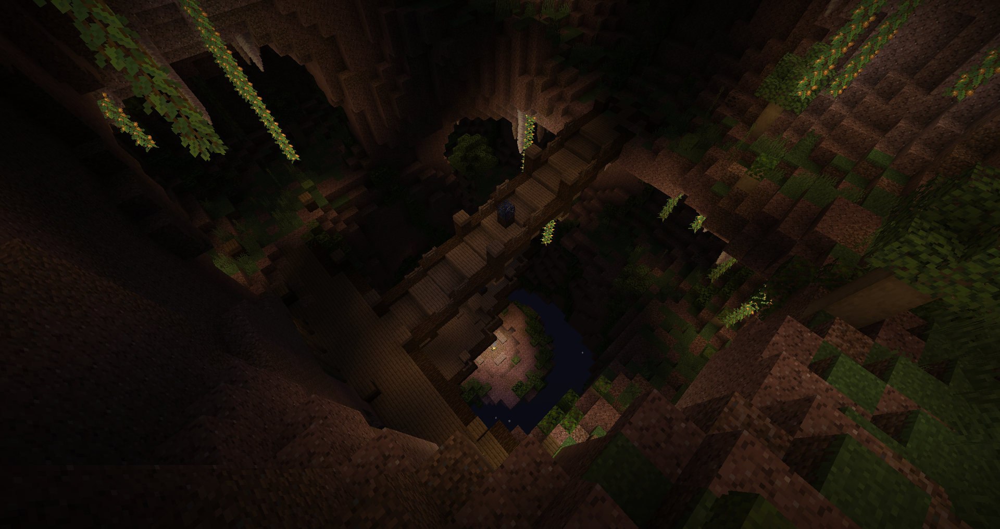
The start is harsh. Better not fall into the void with the starting wood or you can reset. The campfire is confusing with no explanations, but it becomes fairly obvious once you reach another one. The struggle with wooden gear is real, but aside archers, it’s all manageable.
Not a fan of having tanky ranged skeletons this early. Natural spawns are always a nuisance, but it’s especially bad here.
Orange
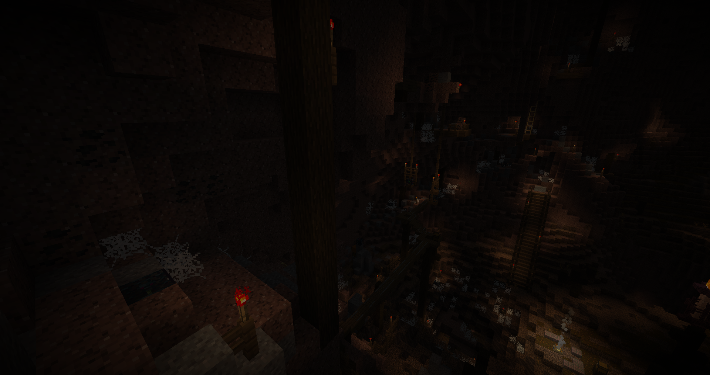
Mean traps and daunting combat, but wood and cool are plentiful here and there’s even a good amount of stone. Ups and downs on the ledge is a bit stressful, but it’s rewarding a whole new gear tier. The giant cavern is looking like a big intersection, and finding the second objective this soon is a relief. That means areas aren’t super massive and are finely segmented even in the same space.
Since you emerge low of resources, there’s a big chance you’ll tackle this area second as you go mine to suit up for the danger ahead. Smart placement.
Magenta
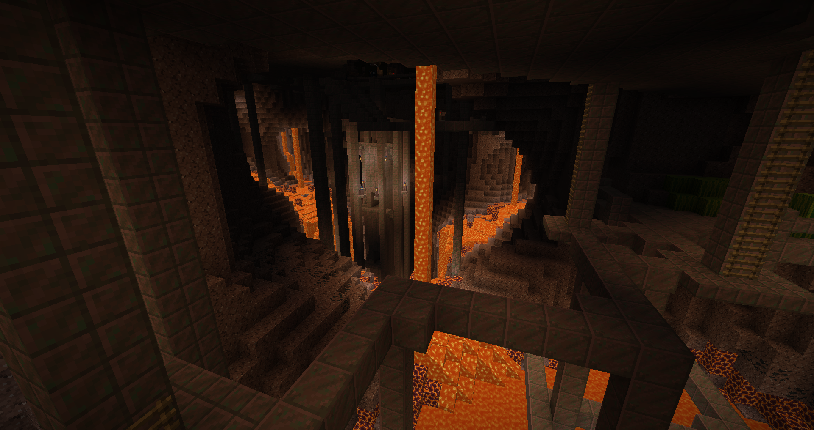
Really tense and dangerous, felt like walking the tightrope. The kind of areas only hard maps would make, it was refreshing and great.
Not as deadly as it looks to be… as long as you don’t let a creeper blow up a tnt stack.
Gray
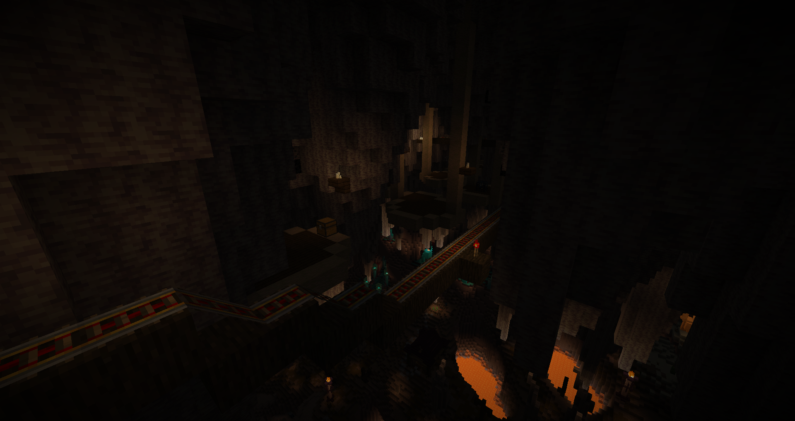
After this point, that’s where people will likely spread out in the progression, as you get a whopping 7 possible areas to go to. I chose to go to the mineshaft area since it was closest and seemed to contain good resources.
The start is filled with trigger happy wipe traps but thankfully calms down later. The mobs on the other hand are very unassuming but easily kill you in 2-3 hits with full chain armor. I thought they were overtuned until I got the objective, which made sense since it’s what would be considered the halfway point of the map. Lovely suspended bridges area.
The iron nugget ore is very smart and a good way of having armor progression feel more natural(even though I completely skipped leather and gold I guess).
Yellow
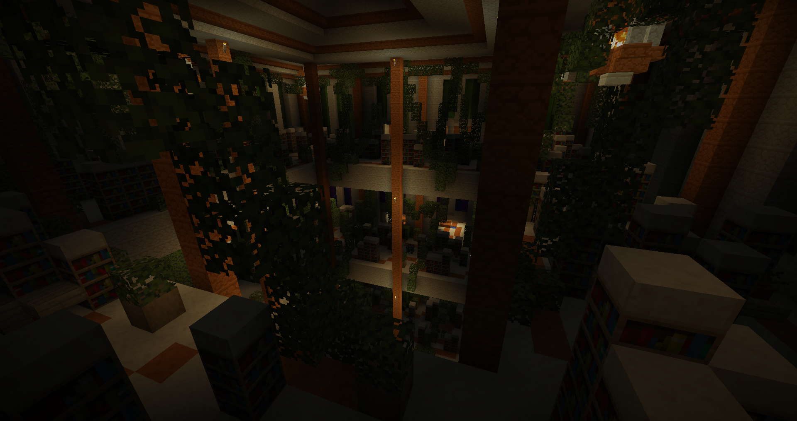
After the previous mistake, I tried tackling the easiest looking area, and it wasn’t too far off the mark. I’m not surprised it wasn’t light blue, considering how yellow everything looked.
It was fun and balanced overall, the complaint would be that there was so much damn natural spawns, it burned all my gear and resources.
A good experience of why I don’t like natural spawns and how annoying they can be. It didn’t help that the whole top of the temple is a waste of time with so much fighting for a stick.
Light Blue

While the color is similar, it’s not very intuitive to have an early area with nether blocks as it’s usually ominous.
This place is basically an exacerbation of yellow’s natural spawn issues due to the terrible vegetation. If clogging your inventory and annoyingly disrupting combat was a boss, this would be it. The fun parts at the end got doused after triggering an unfair wipe trap.
Pink
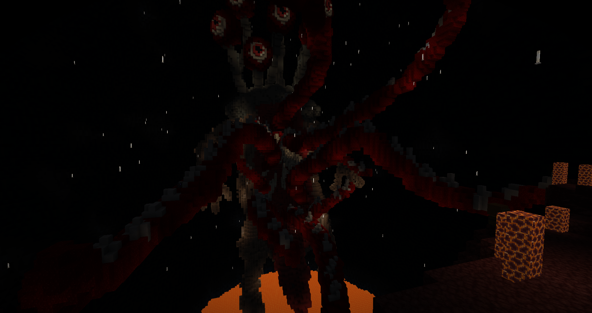
The looks of a final area, complete with a midway checkpoint, but it’s actually just the 7th area. Probably the best area so far, with magenta being close. It’s fun and dangerous, with lots of ranged enemies, but nothing really mean.
Some pretty good items in the few chests to loot. The layout made natural spawns more reasonable and likely helped in making it the best experience. Oh, and the heart coral blocks slowly decaying really help sell the “killing the beast” feel.
Lime

Pretty fun, clean castle conquest area. The illusioner spawners were a bit overkill, when 4 spawned at once I just left.
Light Gray
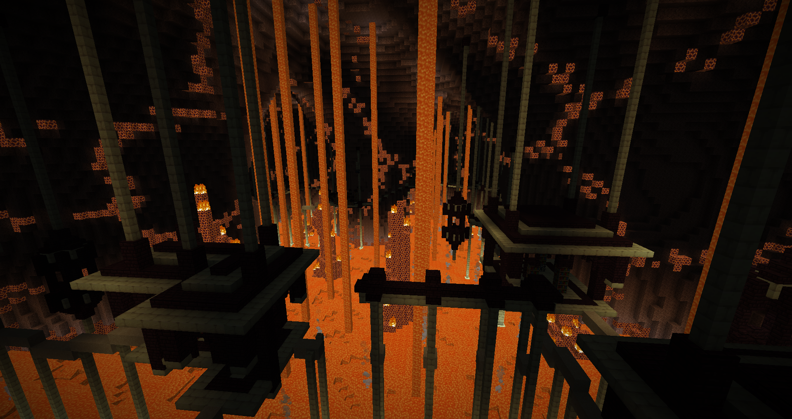
Like a redo of Magenta, but much more dangerous with sand traps instead of tnt. The many additions of ranged mobs makes it less pleasant, and a single mistake leads to getting wiped. It was fine, but after 5 wipes I wanted to be done with it sooner than later.
Cyan
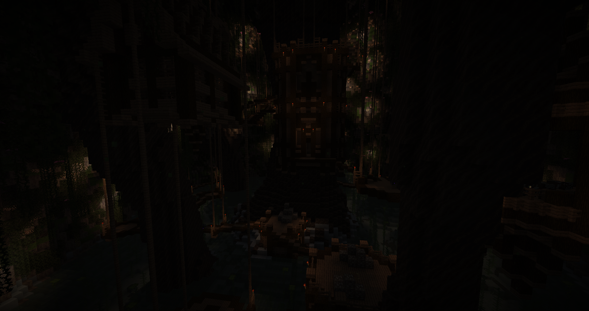
The natural spawns became so much I almost gave up and quit, but instead decided to do the latter half of the map with them disabled. Now keep in mind any area done next will be considerably easier than intended.
This made me remember what swarmming was(swimming in mob swarms). The last map that had it was Dark Realms: Odyssey also by Kunii… coincidence? I think not.
Poison water and suspended bridges are unironically fun.
Brown
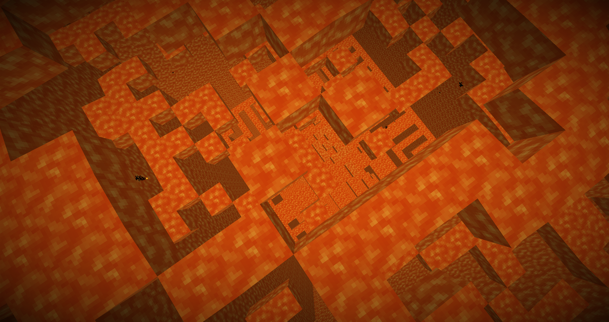
Really unique and interesting. Would’ve been a great area if the hardest segment wasn’t after obtaining the wool. You only have 3 tries and after that, guess the map’s over. (I know about homeward bones, but you can’t expect the player to not spend their limited resources to progress)
Purple
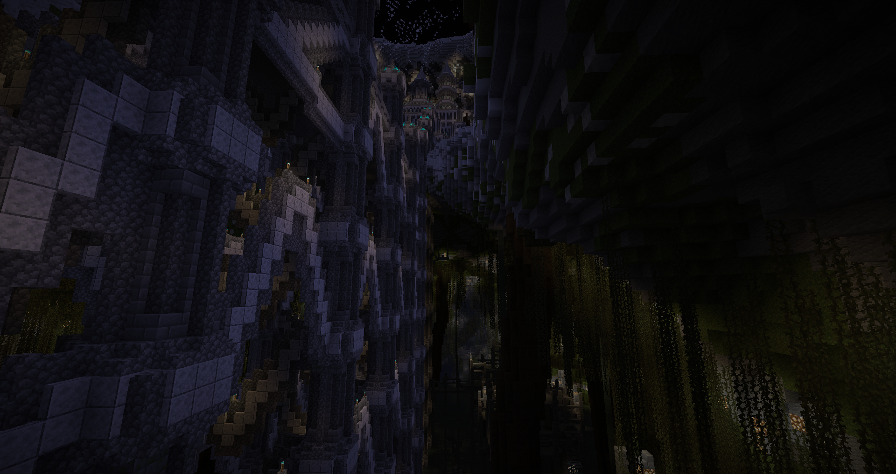
That one is incredibly massive. The river ruins segment is fine, although the knockback zombies feel way overtuned since getting sent in the water is not only a death sentence, but also painful to gather the items back. You’ll be forced to look at your items despawn in front of you.
The water swim unlock felt straight out of a Metroidvania, and that’s probably what I love most so far. The castle section was quite fun, reminds me it’s possible to enjoy playing, I don’t regret removing nat spawns.
Blue
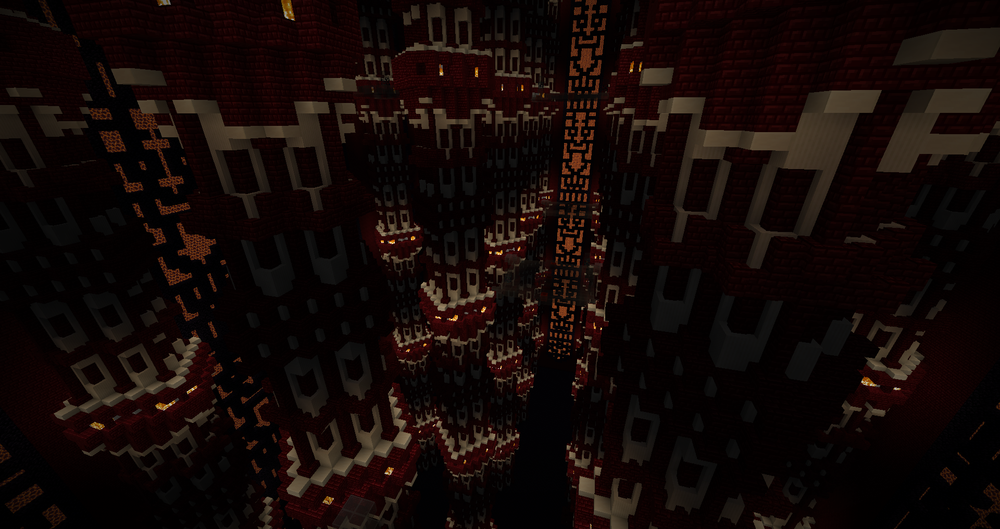
It was fun, confusing in a good way, and refreshing. You just need to be smart and stay on the teleporters to dodge ambushes.
Also, fire, hue hue.
Red
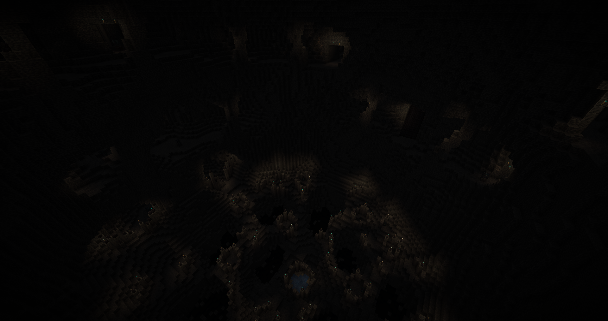
Alright, I found my favorite area of the map. It’s difficult, but not because of power creep, and that’s good design. Feeling the dread while exploring is scary, while also never going overboard to unfairly threaten the player.
The feelings of being lost while stumbling in the dark was game changing in a fun way.
Black
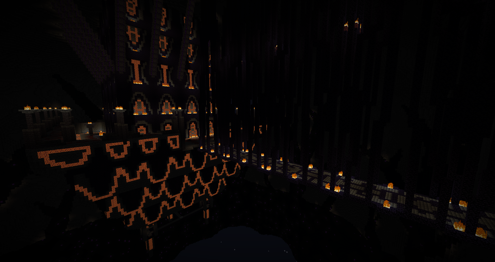
A bit disappointing after red, but I guess that’s what you should expect from a final area in a hard “oldschool” map. Lots of hard combat with bedrock, cobwebs and lava, it becomes numbing after a while. I don’t even want to imagine the purgatory that is doing it with natural spawns.
Conclusion
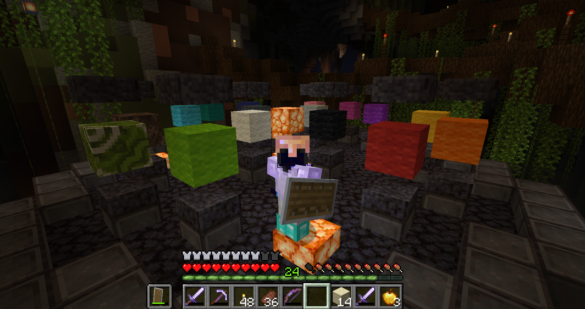
Globally, the natural spawns are the main annoyance, due to low visibility and lots of space to light up they are incredibly obnoxious. They’re too disruptive to be enjoyable, I’ll largely prefer Horrifeye spawns for a hard type map.
There is the right amount of forgiveness in resource renewal… if you don’t count the many wipe traps. You have to learn to manage your resources to go far here.
The open world aspect is top notch, with lots of options available and only surviving to guide you. On the other hand, weapons don’t really progress much, you’ll spend a majority of the map with unenchanted stone swords with only near the end getting to iron. Gets a bit weary after a while.
The way the mobs and combat are tuned heavily push you into using swords, especially near the end game, due to mob spam forcing fast strikes and higher durability. Bit annoying to not have a real choice.
The map had larger spaces than usual with nothing more of interest, which is likely due to being designed around natural spawns. I guess that’s normal, but at the same time, the design suffers from it. This map just confirmed even more why I disliked natural spawns…
The bonfires and homeward bones are a really fun way to have checkpoints, flavor is on point too.
I couldn’t find green, and brown was burned(I looked back and the exit after the wool is basically impossible to go through, what a poor and cruel joke), and since I disabled natural spawns halfway through, I probably don’t deserve to say I beat the map. But I don’t care about that.
It is a hard and mean map, but as long as you like suffering(or remove nat spawns), then you’ll find a nice experience here. I can’t recommend it otherwise.